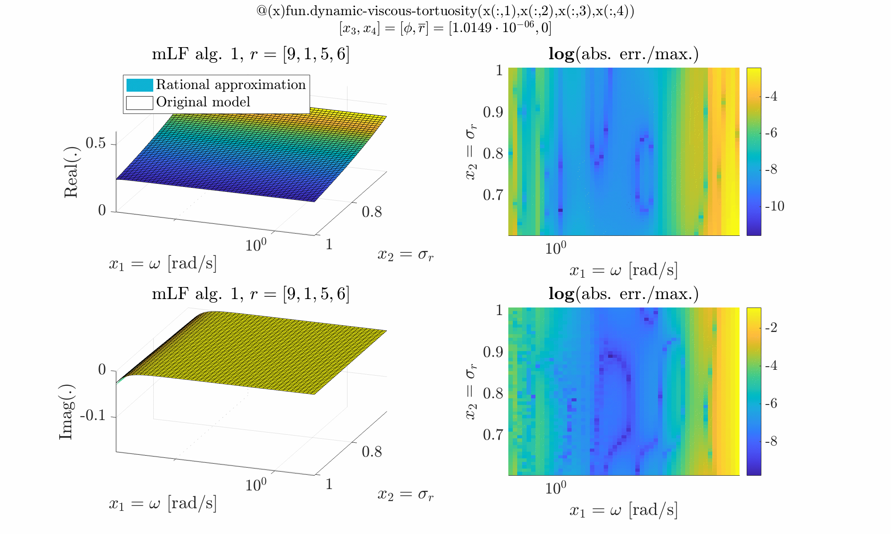
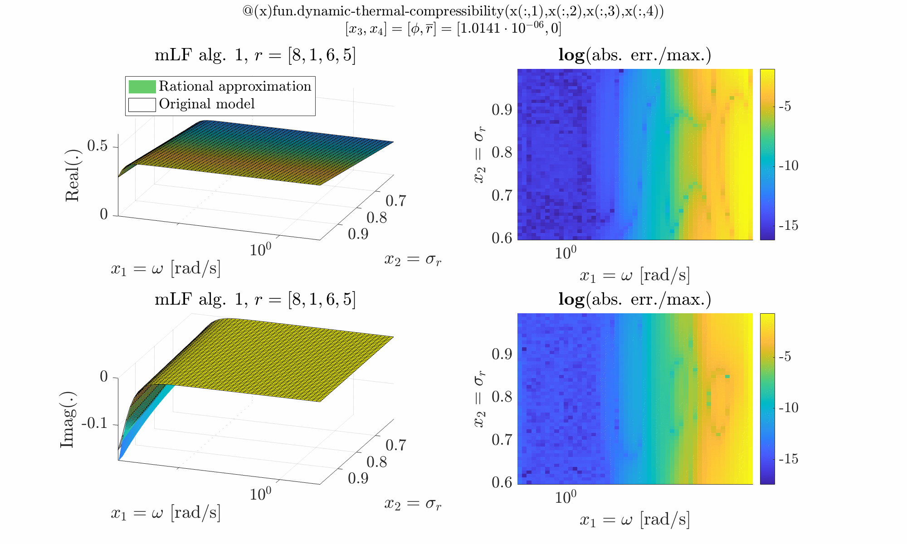
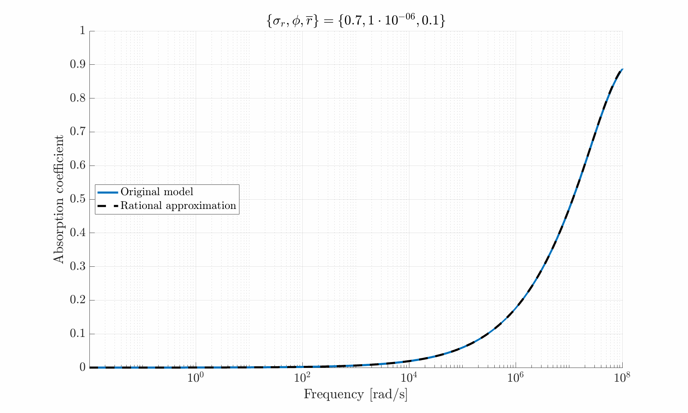

Porous irrational and multivariate example
Define the porous irrational functions
Start by defining the model through the two following irrational functions, $\alpha$ (dynamic viscous tortuosity) and $\beta$ (dynamic thermal compressibility), $$ \begin{array}{rcl} \alpha(x_1,x_2,x_3,x_4) = \alpha(\omega,\sigma_r, \phi, \overline{r}) &=& \dfrac{e^{4S_2}}{\phi}\left[1+\dfrac{a_1}{\imath\omega\overline{r}^2}e^{6S_2}+\dfrac{a_1 e^{6S_2}\sqrt{1+\dfrac{\imath\omega\overline{r}^2}{2a_1}e^{-7S_2}}-1}{\imath\omega\overline{r}^2}\right]\\ \beta(x_1,x_2,x_3,x_4) = \beta(\omega,\sigma_r, \phi, \overline{r}) &=& \phi\gamma-\phi(\gamma-1)\left[1 +\dfrac{a_2 e^{-2S_2}}{\imath\omega\overline{r}^2}+\dfrac{a_2e^{-2S_2} \sqrt{1+\dfrac{\imath\omega \overline{r}^2e^{3S_2}}{a_3}}-1}{\imath\omega \overline{r}^2}\right]^{-1} \end{array} $$ where, $S_2 =\left(\sigma_r\log_{10}2\right)^2$ and where $\omega\in[10^{-2},10^8]$ is the frequency [rad/s], $\sigma_r\in[0.6,0.99]$ is the porosity, $\phi\in[10^{-6}, 10^{-2}]$ is the pore mean size and $\overline{r}\in[0,0.5]$ is the pore standard deviation. The functions are given in Matlab form here.%%% Bounds
w_bnd = [1e-2 1e8];
porosity_bnd = [.6 .99];
pore_mean_size_bnd = [1e-6 1e-2];
pore_standard_dev_bnd = [0 .5];
%%% Interpolation points
ip{1,1} = logspace(log10(w_bnd(1)),log10(w_bnd(2)),50);
ip{2,1} = linspace(porosity_bnd(1),porosity_bnd(2),10);
ip{3,1} = logspace(log10(pore_mean_size_bnd(1)),log10(pore_mean_size_bnd(2)),20);
ip{4,1} = linspace(pore_standard_dev_bnd(1),pore_standard_dev_bnd(2),20);
for ii = 1:length(ip)
p_c{ii} = ip{ii}(2:2:end);
p_r{ii} = ip{ii}(1:2:end);
end
%%% Define the alpha and beta functions
H_alpha = @(x) fun.dynamic_viscous_tortuosity(x(:,1), x(:,2), x(:,3), x(:,4));
H_beta = @(x) fun.dynamic_thermal_compressibility(x(:,1), x(:,2), x(:,3), x(:,4));
%%% Data tensor
[y,x,dim] = mlf.make_tab_vec(H_alpha,p_c,p_r);
tab_alpha = mlf.vec2mat(y,dim);
[y,x,dim] = mlf.make_tab_vec(H_beta,p_c,p_r);
tab_beta = mlf.vec2mat(y,dim);
tab_alpha and tab_beta are constructed. Here leading to two 4-D tensors, with the following complexity
$$
\mathcal T_4^{\otimes} \in \mathbb C^{50\times 10\times 20 \times 20}
$$
Use the mLF (Alg. 1: direct [A/G/P-V, 2025])
Now we are ready to build the approximation. Theopt.method is used to select either the recursive ('rec') or full ('full') method.
Here the latter is used and results in better results (still to be understood).
The opt.data_min is used to use all data in the null-scapce computation (requires more CPU but may result in a least square averaging).
The opt.ord_obj is used to specify the complexity along each variables.
Here it should be noticed that due to the irrational structure, order is not straightforward.
opt.method_null = 'svd0';
opt.method = 'full';
opt.ord_obj = [9 1 5 6];
opt.data_min = false;
[r_alpha,imlf] = mlf.alg1(tab_alpha,p_c,p_r,opt);
opt.ord_obj = [8 1 6 5];
[r_beta,imlf] = mlf.alg1(tab_beta,p_c,p_r,opt);
Evaluate the resulting approximate
Now we compare the original data and approximate functions. The below figure compares the original and its rational approximate functions along $\omega$ and $\sigma_r$, for varying $\phi$ and $\overline{r}$. The frames show the value (left) and the mismatch (right). First figure shows $\alpha$ (dynamic viscous tortuosity), the second is $\beta$ (dynamic thermal compressibility).

ZAref = @(x) fun.impedence_abs(H_alpha,H_beta, x(:,1), x(:,2), x(:,3), x(:,4));
ZAapp = @(x) fun.impedence_abs(r_alpha,r_beta, x(:,1), x(:,2), x(:,3), x(:,4));

Reference
- L. Schwoebel, C. Poussot-Vassal, D. Matignon, R. Roncen, E. Piot and P. Vuillemin, "Application of the multivariate Loewner Framework to the modelling of acoustic propagation in rigid-frame porous materials", in Proceedings of the Wave conference, Montreal, Canada, June, 2026.